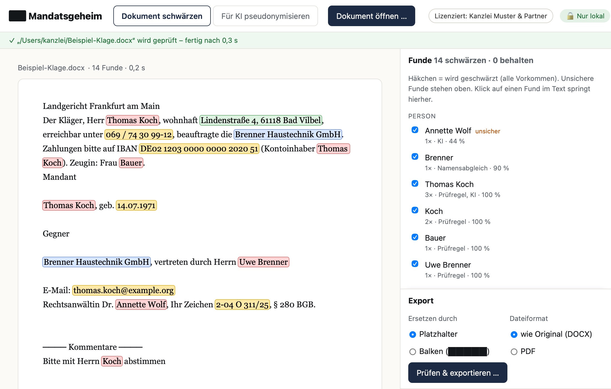

Schwärzen, ohne dass ein einziges Wort die Kanzlei verlässt.
Mandatsgeheim findet Namen, Anschriften, Aktenzeichen, IBAN, Steuer-ID und weitere Kennungen in Word-, PDF- und Textdateien, auch in Scans, und entfernt sie dauerhaft. Die Software läuft ausschließlich auf Ihrem Rechner: Sie enthält keinen Code, der Daten ins Internet senden könnte. Auch die Lizenz wird offline geprüft.
Preise & Gründer-LizenzKostenlos im Browser testenVorschlagen, prüfen, endgültig entfernen
1. Erkennen
Prüfregeln mit Prüfziffern (IBAN, Steuer-ID) und ein lokales KI-Modell für Namen, Firmen und Anschriften im Fließtext. Eigene Begriffslisten (z. B. Projektnamen) kommen hinzu.2. Prüfen
Jeder Fund mit Quelle und Sicherheit; unsichere zuerst. Ein Häkchen entscheidet für alle Vorkommen. Fehlendes markieren Sie mit der Maus.3. Entfernen & kontrollieren
Text, Kopf-/Fußzeilen, Kommentare, Bilder und Metadaten werden wirklich bereinigt. Ein Leck-Test liest die fertige Datei erneut und blockiert den Export, falls noch etwas übrig ist.
Wofür Kanzleien es einsetzen
DSGVO-Auskünfte
Art.-15-Auskünfte vorbereiten und Daten Dritter zuverlässig entfernen. →Anlagen & Akteneinsicht
Anlagen, Schriftsätze und Unterlagen für Gegner, Gericht oder Veröffentlichung schwärzen. →KI-Werkzeuge nutzen
Texte pseudonymisieren, bevor sie in ChatGPT & Co. gehen; die Antwort lokal zurückübersetzen. →Unsere Prinzipien
100 % offline, nachprüfbar
Keine Telemetrie, keine Updates im Hintergrund, kein HTTP-Client im Programm. Ihre IT kann es mit einer Firewall-Regel selbst prüfen. →Lizenz ohne „nach Hause telefonieren“
Eine signierte Lizenzdatei, die die App lokal prüft. Kein Konto, kein Server, keine Aktivierung. →Mehrere Sicherheitsnetze
Prüfregeln, KI, Namensabgleich, Ihre Prüfung und ein automatischer Leck-Test. Keine Erkennung ist perfekt, deshalb mehrere Ebenen. →Was „lokales KI-Modell“ heißt
Ein offenes Modell (Apache-2.0) als Datei auf Ihrer Festplatte. Es lernt nicht mit, es sendet nichts. →Warum lokal den Unterschied macht
| Cloud-Dienste | Mandatsgeheim | |
|---|---|---|
| Dokumente verlassen die Kanzlei | Ja | Nein |
| Auftragsverarbeitungsvertrag (Art. 28 DSGVO) | Erforderlich | Nicht erforderlich, wir erhalten nie Daten |
| Dienstleister mit Zugang zu Mandatsgeheimnissen (§ 203 StGB, § 43e BRAO) | Ja, mit Auswahl-, Vertrags- und Kontrollpflichten | Nein, kein Dritter beteiligt |
| Prüfbar durch Ihre IT | Vertrauen in den Anbieter | Firewall-Test: App funktioniert ohne Netz |
Gründer-Lizenz für die ersten 20 Kanzleien
Gründer-Kanzleien erhalten den Beta-Zugang als Erste, gestalten mit und behalten den Gründerpreis dauerhaft, solange die Lizenz verlängert wird. Unverbindlich reservieren: Sie zahlen erst, wenn Sie die Software getestet haben und weiter nutzen möchten.
Kanzlei S (bis 3 Berufsträger) 290 € statt 490 € pro Jahr · Kanzlei M (bis 15 Berufsträger) 1.190 € statt 1.900 € pro Jahr · zzgl. USt.
Gründer-Lizenz unverbindlich reservierenPreise & Ablauf im DetailHäufige Fragen
Läuft das wirklich ohne Internet?
Ja. Erkennung, Schwärzung, Export und Lizenzprüfung laufen lokal. Das Programm enthält keinen HTTP-Client, keine Telemetrie und keine automatische Update-Prüfung. Ihre IT kann alle ausgehenden Verbindungen für die App sperren; sie funktioniert unverändert. Details
Wie zuverlässig ist die Erkennung?
Strukturierte Daten (IBAN, Steuer-ID, E-Mail, Telefon, Aktenzeichen) erkennen Prüfregeln, Namen und Firmen ein lokales KI-Modell. In unseren Tests mit fiktiven Dokumenten, die das System vorher nicht kannte, fand es beim ersten Kontakt 86 % der Fundstellen, nach Verbesserungen 98 %; bei echter Gerichtssprache 93 % beim ersten Kontakt, 99 % nach Verbesserungen, und 99 % beim ersten Kontakt mit einem zweiten, neuen Satz Entscheidungen. Deshalb prüfen Sie jeden Vorschlag vor dem Export, und ein Leck-Test kontrolliert die Ausgabe. Details
Welche Formate?
Word (DOCX), PDF und Text (TXT). Gescannte PDFs, Screenshots in PDFs und Bilder in Word-Dateien werden per Texterkennung gelesen, ebenfalls lokal. Export wahlweise im Originalformat oder als PDF. Alte .doc-Dateien bitte vorher in Word als DOCX speichern.
Brauchen wir einen AV-Vertrag?
Nein. Wir verarbeiten keine Daten in Ihrem Auftrag, da die Software ausschließlich bei Ihnen läuft. Auch im Support erhalten wir keine Dokumente.
Windows oder Mac?
Die Mac-Version ist im Test, die Windows-Version in Vorbereitung. Geben Sie bei der Reservierung an, was Sie nutzen.